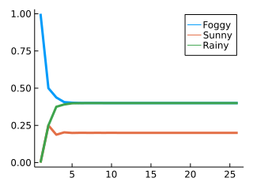
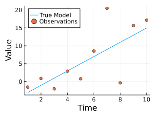
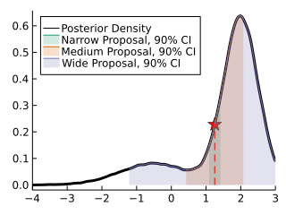
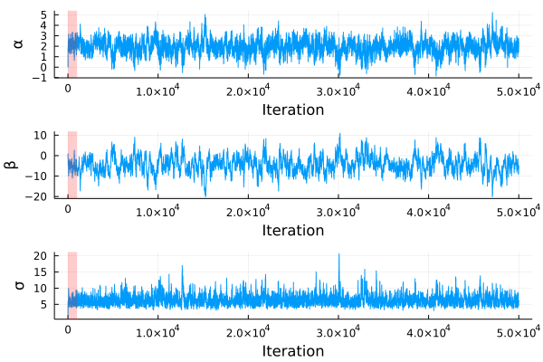
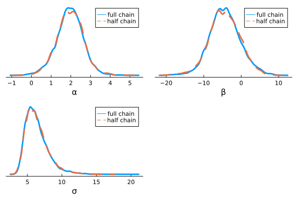
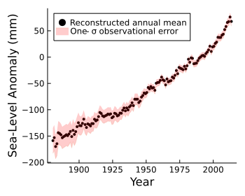
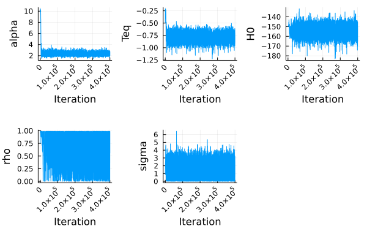
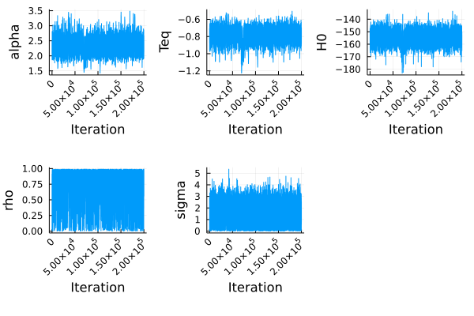
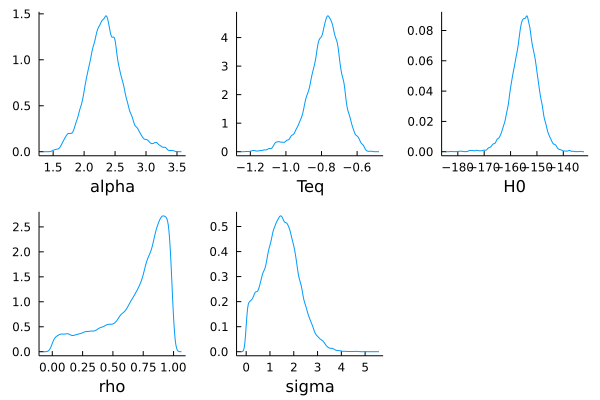
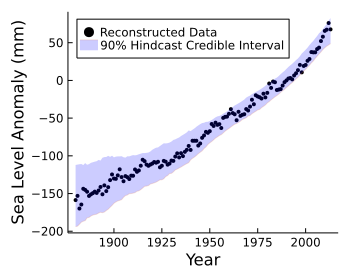

Chapter 5 Markov Chain Monte Carlo
This chapter was written by Kelsey L. Ruckert, Tony E. Wong, Ben S. Lee, Yawen Guan, and Murali Haran. It will introduce you to the basics of Markov Chains, Markov chain Monte Carlo (MCMC), and the Metropolis-Hastings algorithm.
Learning Objectives
After completing this chapter, you should be able to:
- Understand the detailed balance equation and why it is important for MCMC;
- Describe the properties of a Markov chain and how they are relevant to MCMC sampling;
- Code a simple Metropolis-Hastings sampler and use it to draw samples from a target distribution.
5.1 Introduction
In earlier chapters, we examined how a statistical technique called the bootstrap can be used to determine how confident we are about our estimates of uncertain values. In particular, we looked at how to determine whether a coin is fair and how sure we can be about our estimates of future sea-level change.
The bootstrap is an example of what is called a frequentist statistical technique. Frequentist techniques assume that the probability of an event is the proportion of the times the event will occur (if it was an infinite number of trials and a probability \(0 < p < 1\), then we would see an infinite number of “successful” outcomes).1 For example, we know that the probability that a fair coin will come up heads on any individual flip is 0.5. In a frequentist interpretation, that probability implies that we can observe a very large number of coin flips, in which we count the number of times the coin comes up heads. That number of times, divided by the number of flips, is the frequency with which the coin comes up heads.
Of course, in many situations, we cannot perform lots of random trials to determine the probabilities of different outcomes. The sea-level rise problem is one example. We want to know how much sea level will rise in the future. Because the data and physical models are imperfect, we cannot be sure of the exact answer. In a frequentist framework, we would try to ascertain how sea-level rise would vary under multiple hypothetical replications of the state of the world (multiple alternative worlds). This is how we would determine the probabilities of different outcomes.
Bayesian techniques provide us with an alternative way of viewing this problem. In a Bayesian framework, we have a preexisting estimate of the probability of different outcomes that is based on our past experiences and our beliefs about the situation in question. We then make observations and update the probability estimates based on those observations. This procedure, which is called Bayesian updating, is perhaps similar to how people often make decisions. New information leads to changed opinions. The entire process of defining the prior probability distribution of different outcomes or physical model parameters and then using Bayesian updating to update our beliefs about those values is called Bayesian model calibration.2 The use of the word “model” can refer to two different things, such as the statistical model (which is Bayesian in our case) and the physical model of the system of interest (e.g., a global sea-level model). For simplicity and ease is understanding, we will use “statistical” or “physical” when referring to both kinds of models.
In Bayesian model calibration, physical model parameters are considered to be random variables. Our knowledge of the parameters (before any data are observed) is represented by a prior probability distribution. Observations may be used to inform estimates of which parameter values are more or less likely. The probability model for observations provides a distribution on observations for a particular parameter setting3 Think of the mean and variance parameters of a normal distribution — as we vary the values of the mean and the variance, the normal distribution for the observation changes., that is, as we vary the value of the parameters, the probability distribution changes. The probability model therefore provides a probability distribution for random variables for a particular parameter value. A likelihood function4 A likelihood function is equivalent to the probability distribution function, only it treats the parameters as uncertain and the observed values as given. The likelihood function is therefore a function of the parameters only, both the statistical and physical model parameters. helps solve the inverse problem — it is useful for providing information about the parameters given the observations.
Direct sampling from the posterior distribution is typically impossible because the posterior is only known up to a constant, and in many cases this distribution does not have a convenient form. In order to obtain samples from the posterior, one approach is to employ a Markov chain Monte Carlo (MCMC) sampling technique.
MCMC is a class of algorithms used to simulate random variables or “draw samples” from a target probability distribution by constructing a Markov chain based on the distribution. For Bayesian inference, the distribution of interest is the posterior distribution. When the Markov chain satisfies certain properties, elements of the chain can be treated almost as though they were samples taken directly from the posterior distribution.
5.2 Markov Chains
5.2.1 Definition
A Markov chain is a stochastic model representing a sequence of states \((X_t)\). The key property that a Markov chain must satisfy is the Markovian property, which specifies that the probability of the next state depends only on the current state5 Technically, this is the definition of a discrete-time Markov chain; Markov chains can also be defined over continuous time, so if the history of the chain’s states has been \(\{x_1, x_2, \ldots, x_{t-1}\}\), \[p\left(X_t = x | X_1 = x_1, X_2 = x_2, \ldots, X_{t-1} = x_{t-1}\right) = p\left(X_t = x | X_{t-1} = x_{t-1}\right).\]
A Markov chain specification requires three elements:
- the state space (the space of possible values for each chain element);
- a probability distribution over the states which specifies the probability of starting the chain in that state (the initial distribution);
- and a probability distribution which specifies how the chain transitions from one state to another (the transition distribution).
5.2.2 A Simple Example
For example, suppose we are interested in the weather on any day6 This example is adapted from Example 11.1 in Grinstead & Snell (2006).. Suppose the weather can be either rainy, foggy, or sunny. The state space for the Markov chain contains three possible values: “rainy,” “foggy,” and “sunny.”
Based on past experience, we know in this example that there are never two sunny days in a row and only half of the time a sunny day will occur after a foggy or rainy day. We also know there is an even chance of having two foggy days in a row and two rainy days in a row. This information specifies the transition probabilities between states: \[ \begin{alignat*}{3} p(\text{FOGGY} \to \text{FOGGY}) &= \frac{1}{2} &\quad p(\text{FOGGY} \to \text{SUNNY}) &= \frac{1}{4} &\quad p(\text{FOGGY} \to \text{RAINY}) &= \frac{1}{4} \\ p(\text{SUNNY} \to \text{FOGGY}) &= \frac{1}{2} &\quad p(\text{SUNNY} \to \text{SUNNY}) &= 0 &\quad p(\text{SUNNY} \to \text{RAINY} &= \frac{1}{2} \\ p(\text{RAINY} \to \text{FOGGY}) &= \frac{1}{4} &\quad p(\text{RAINY} \to \text{SUNNY}) &= \frac{1}{4} &\quad p(\text{RAINY} \to \text{RAINY} &= \frac{1}{2} \end{alignat*} \] and can be represented more succintly as a transition matrix, \[P = \begin{pmatrix} 1/2 & 1/4 & 1/4 \\ 1/2 & 0 & 1/2 \\ 1/4 & 1/4 & 1/2 \end{pmatrix},\] where each row represents the current state of the weather and each column represents the next day’s weather.7 Note that the sums of the entries of each row in this transition matrix must equal one.
In Julia, we could formalize this transition matrix as follows.
## 3×3 Matrix{Float64}:
## 0.5 0.25 0.25
## 0.5 0.0 0.5
## 0.25 0.25 0.5Using what we already know, we can answer questions about the future weather by calculating probabiltiies based on today’s weather. For example, suppose today is foggy. What is the probability that the weather will be rainy two days from now? There are three possible paths:
- Tomorrow is foggy, and two days from now the weather is rainy. Since today is foggy, the probability that tomorrow is also foggy is 0.5. And if tomorrow is foggy, then the probability that two days from now is rainy is 0.25. Thus, the probability of it being foggy then rainy is the product of these probabilities, \(0.5 \times 0.25 = 0.125\).
- Tomorrow is rainy (a 0.25 probability) and in two days, it is also rainy (a 0.5 probability), which also has a 0.125 probability of occurring based on the product of the probabilities.
- Tomorrow is sunny, followed by a rainy day. Since today is foggy, the probability of tomorrow being sunny is 0.25. If tomorrow is sunny, then the probability that it will be rainy two days from now is 0.50. Hence, if today is foggy, then the probability of it being sunny then rainy is the product \(0.25 \times 0.5 = 0.125\).
These three events are independent8 Tomorrow cannot be foggy, rainy, and sunny all at the same time., so combining these three probabilities gives a total probability of \(0.125 + 0.125 + 0.125 = 0.375\) that it will be rainy two days from now. Thus, there is a 0.375 probability that the weather will be rainy two days from now given today is foggy. We could follow the same procedure to calculate the probabilities of the weather in two days being foggy or sunny. But rather than do this for all individual cases, we can note that, due to the Markovian property, the probabilities of transitioning from \(x_t \to x_{t+2}\) are given by \(P \times P = P^2\).
## 3×3 Matrix{Float64}:
## 0.4375 0.1875 0.375
## 0.375 0.25 0.375
## 0.375 0.1875 0.4375We interpret these values analogous to how we did above: the probability of transitioning after two days from fog to rain is in row 1 (today’s weather), column three (the weather in two days), and this is precisely the 0.375 probability we calculated by considering the different paths.
In fact, we could keep on going and calculate the probabilities of the weather at any point in the future, conditioned only on today’s weather being foggy. Figure 5.1 shows the evolution of these probabilities from an initial probability vector of \([1 0 0]\), that is, a known foggy state.
using Plots
function future_weather_probability(initial_probability, forecast_days_ahead, transition_matrix)
# initialize storage for probabilities
weather_probability = zeros(forecast_days_ahead + 1, 3)
# first probability is the initial vector
weather_probability[1, :] = initial_probability
# loop over each future day and calculate the probabilities
for i in 1:forecast_days_ahead
# [i] is used as the index to get a row vector
weather_probability[i+1, :] = weather_probability[[i], :] * P
end
# return probabilities
return weather_probability
end
## future_weather_probability (generic function with 1 method)
probs = future_weather_probability([1 0 0], 25, P);
plot(probs, label=["Foggy" "Sunny" "Rainy"], lw=3, grid=:off);
plot!(size=(320, 240))Figure 5.1: Probability of the weather over a 25 day period starting from fog for the stochastic process described above.
Notice how the probabilities in Figure 5.1 stabilize over time (after about 5 days, in this case)! Certain Markov chains have the interesting property that, eventually, this distribution of future states will be the same no matter what the current state is. In this example, if we go out far enough into the future, it doesn’t matter what today’s weather is — the probability of the weather that far ahead is the same! When this occurs, this distribution is called the stationary or equilibrium distribution of the Markov chain.9 This probability vector \(\pi\) has the property that \[\pi P = P,\] so that \(\pi\) is a normalized eigenvector of \(P\) with eigenvalue one. In other words, the Markov chain eventually forgets its initial condition and the probability of being in any state converges to \(\pi\). The state history prior to this convergence are called the transient portion of the Markov chain.
5.2.3 From Markov chains to Monte Carlo
The goal of MCMC is to sample from a target distribution, usually the posterior distribution. There are a number of different “families” of MCMC algorithms, but they all work by constructing a Markov chain over the parameter space that has a stationary distribution equal to the target distribution, so that, eventually, the elements of the chain are drawn from the target distribution. Remember about the transient portion of the chain, though — it’ll become relevant later.
There is another important implication of the use of a Markov chain to sample from the target distribution. Many statistical quantities, such as the mean, are ideally derived from identically and independently distributed samples. Samples drawn using a Markov chain, though, are not independently drawn, as they are dependent on the previous chain element. This means that 1,000,000 MCMC samples are not equivalent to 1,000,000 independent samples, but the precise effective sample size depends on properties of the chain. We will discuss this later.
5.3 The Metropolis-Hastings Algorithm
The Metropolis-Hastings algorithm10 Which was named one of the top 10 algorithms in applied mathematics in the 20th century in 2000. is the foundation for many “other” MCMC algorithms. In this section, we will only give a brief introduction to the Metropolis-Hastings algorithm and why it works. For interested readers, Robert (2015) provides more details and examples.
5.3.1 Overview of the Algorithm
Given a current value of the Markov chain \(x_t\), the Metropolis-Hastings algorithm proceeds by proposing a new value \(\hat{y}\), which is then accepted or rejected. If the value is accepted, \(x_{t+1} = \hat{y}\), else \(x_{t+1} = x_t\).
New values are proposed according to some proposal distribution \(q(y | x)\), so that \(y \sim q(\cdot | x)\). For example, a common default choice for \(q(\cdot | x)\) is \(\mathcal{N}(x, \sigma^2)\), a (multi-variate) normal distribution centered at \(x\) with some specified variance \(\sigma^2\).11 Other choices may be used, and this can dramatically affect the efficiency of the sampling algorithm. We will use \(q(\cdot | x) = \mathcal{N}(x, \sigma^2)\) in our examples.
The next question is whether a new proposal \(y\) is accepted. If the target distribution is denoted by \(\pi(\cdot)\), the acceptance probability \(\alpha(y | x)\) is defined as \[\alpha(y | x) = \min\left\{1, \frac{\pi(y)q(x | y)}{\pi(x)q(y | x)}\right\}.\] When the proposal distribution \(q\) is symmetric, such as when \(q\) is normal, the \(q\) terms cancel out, and acceptance is based on the ratio of the target distribution probabilities. In this case, when the new proposal has a higher target probability than the current value, \(\pi(y) > \pi(x)\), it is accepted with probability 1.
To summarize, to run the Metropolis-Hastings algorithm, start with some initial parameter value \(x_0\). Then each iteration from step \(t-1\) to \(t\) follows these steps:12 As written, these steps are for the all-in-one Metropolis-Hastings algorithm, where all parameters are updated in a single step. The other extreme is to propose a single parameter at a time, calculate its acceptance probability conditional on the other, currently fixed parameters, and iterate accordingly. You can also split the difference by dividing the parameters into groups and proposing each group at a time. These different variations will have different efficiencies for a given problem based on the structure of the joint posterior.
- Propose a new value \(y \sim q(\cdot | x_{t-1})\).
- Compute the acceptance probability \(\alpha(y | x_{t-1})\).
- Sample a random uniform value \(u \sim \mathcal{U}(0, 1)\).
- If \(u < \alpha(y | x_{t-1})\), set \(x_t = y\);
- Else \(x_t = x_{t-1}\).
One extremely powerful aspect of this algorithm is that we don’t need to know the target distribution \(\pi\) precisely, but only a distribution \(g\) that it is proportional to,13 Since the proportionality coefficient cancels out in the definition of \(\alpha(y|x)\)., so we can completely ignore normalizing constants.14 Which is great, because the normalizing constant is a pain to compute.
5.4 Calibrating a Simple Model with MCMC
5.4.1 Generate Pseudo-Observations
Let’s do an example. Suppose that we have some observations \(y_t\) of a linear system15 Or, in this case, some “pseudo-observations” we will generate. defined by \[f(\alpha, \beta, t) = \alpha \cdot t + \beta.\] While \(f\) is the physical model of the system, observations almost always have some measurement error, which we model by \(\varepsilon_t \sim N(0, \sigma^2)\). Then our observed data \(y_t\) is represented by \[y_t = f(\alpha, \beta, t) + \varepsilon_t.\] We can see the pseudo-observations plotted in Figure 5.2.
using Plots
using Random
using Distributions
# set the random seed
Random.seed!(1);
# define the "true" model parameters
alpha_true = 2;
beta_true = -5;
sigma_true = 5;
sim_time = Array(1:10);
# generate observations
y_true = (alpha_true .* sim_time) .+ beta_true;
meas_err = rand(Normal(0, sigma_true), 10);
y_obs = y_true + meas_err;
# plot the true model and observations
plot(sim_time, y_true, xlabel="Time", ylabel="Value", label="True Model", legend=:topleft);
scatter!(sim_time, y_obs, label="Observations");
plot!(size=(320, 240))Figure 5.2: Pseudo-observations used to calibrate the linear regression example.
5.4.2 Define the Statistical Model
To specify a Bayesian model, we need to specify a likelihood function and prior distributions over the physical model and statistical parameters. The likelihood function is based on our model of the error process, as \[y_t - f(\alpha, \beta, t) = \varepsilon_t \sim N(0, \sigma^2).\] Thus, for proposed values of \(\alpha\) and \(\beta\), we can compute the residuals between the observations and the model predictions, and these should be distributed according to the normal distribution specified by \(\sigma\). We’ve also assumed that these errors are independent16 We could have instead modeled them as autocorrelated, if an analysis of the residual structure suggested that this was the case., so the log-likelihood function is the sum of the log-likelihoods for each individual data point.17 In general, it’s preferable to work with log-likelihoods instead of likelihoods because likelihood values can be quite small, and so the logarithms are more numerically stable.
For the code implementation, it might be tempting to pass each individual parameter as a function input, as the problem is so small. The downside to this is that it doesn’t scale well — for a bigger problem, where we might have dozens of parameters, the function specification would get out of control! It’s more readable and more straightforward to pass around the entire parameter vector and then access which parameters you need.18 Just make sure to document how the parameters are indexed within the vector. This should be specified clearly somewhere in your code and documentation.
# We will need the Distributions.jl package loaded when we actually
# want to run this function, but here we're just defining it
# The inputs to the log-likelihood function are the model parameters,
# as well as the vector of observations and a vector of times to which
# the observations correspond.
#
# alpha = theta[1], beta = theta[[2], sigma = theta[3]
function log_likelihood(theta, obs, model_time)
# compute model output with the parameters
f_out = (theta[1] .* model_time) .+ theta[2]
# compute the residuals
residuals = obs - f_out
# calculate the log-likelihood for each residual and sum
resid_normal_dist = Normal(0, theta[3])
log_lik = loglikelihood(resid_normal_dist, residuals)
return log_lik
end## log_likelihood (generic function with 1 method)In this example, we are given very little prior information about the physical process, so it is difficult to define an informative prior distribution. One key consideration is that one should not specify the priors based on the data19 This would be result in the information in the observations being counted twice — once in the likelihood, and once in the priors — which could result in overconfident inferences., so we will just use diffuse priors which do not contain much information:
- \(\alpha \sim N(0, 10)\);
- \(\beta \sim N(0, 10)\);
- \(\sigma \sim \text{Half-Cauchy}(0, 2)\).20 This is a Cauchy distribution truncated at 0, so it only has positive probability on the positive real-line. This choice gives us a fatter tail for the variance than using a truncated normal or log-normal. Some arguments in favor of using half-\(t\) or half-Cauchy distributions for this type of prior are given by Gelman (2006) and polsonHalfCauchyPriorGlobal2012.
# once again, we will need to load Distributions.jl before we use this function
# the inputs to the log-prior function are the model parameters only;
# they are indexed the same as in log_prior
function log_prior(theta)
# define the prior distributions
alpha_prior = Normal(0, 10)
beta_prior = Normal(0, 10)
# we will use the truncated() function in Distributions.jl
# to specify the half-Cauchy
sigma_prior = truncated(Cauchy(0, 2), 0, Inf)
logpri = logpdf(alpha_prior, theta[1]) +
logpdf(beta_prior, theta[2]) +
logpdf(sigma_prior, theta[3])
return logpri
end## log_prior (generic function with 1 method)Finally, we can specify the log-posterior function, which is straightforward, as the log-likelihood and log-prior just need to be computed and summed.21 Notice that we don’t compute normalizing constants anywhere; as noted above, this is completely unnecessary with MCMC, as all we need to know is a distribution which is proportional to the posterior distribution.
# again, load Distributions.jl before using this function
# the inputs to the log-posterior function are the model parameters,
# the observations, and the model simulation times.
function log_posterior(theta, obs, model_time)
loglik = log_likelihood(theta, obs, model_time)
logpri = log_prior(theta)
return loglik + logpri
end## log_posterior (generic function with 1 method)5.4.3 Metropolis-Hastings Implementation
In this particular example, we will implement the Metropolis-Hastings algorithm manually, since the problem is so simple. For more complex problems, we might want to use the Turing.jl package.22 Turing.jl can sample from the posterior using a variety of MCMC algorithms, including Metropolis-Hastings, and will automatically keep track of various diagnostics and associated quantities, such as log-posterior values and acceptance rates. We will have to do this manually in this example.
We will draw our proposals from a multivariate normal distribution with a diagonal covariance matrix.23 This is the same thing as drawing them from independent univariate normals, but this approach scales better to larger problems. These matrices are specified using PDMats.jl, which ensures that the matrices are positive definite.24 Positive definite matrices are symmetric and have positive eigenvalues. Covariance matrices must be positive definite. PDMats.jl has special forms for various types of positive-definite matrices, including matrices which are diagonal, which helps with speed and memory usage.
The Metropolis-Hastings sampler below is also coded as a function; we do this to allow the proposal standard deviations to be passed in as an input. This is typically not necessary, but it will allow us to examine the implications of various choices later.25 This is also the reason that we’re keeping track of the number of accepted proposals, which isn’t strictly necessary, but is a useful diagnostic, as we shall see.
# load Distributions.jl and PDMats.jl before using this function
# the first input (stepsize) is a vector of standard deviations; these will need
# to be squared; the second is the number of MCMC iterations; the third are
# the initial values, and we also need to pass in the observations and the model time
function mhsample(stepsize, niter, theta_0, obs, model_time)
# initialize storage for samples and log-posterior values
samples = zeros(niter+1, 3)
logp = zeros(niter+1)
# initialize the number of accepted proposals
accepts = 0
# set theta_0 as the initial sample value
samples[1, :] = theta_0
# compute the log-probability of the initial value and store
logp[1] = log_posterior(theta_0, obs, model_time)
# create covariance matrix for the proposal distribution
covmat = PDiagMat(stepsize)
for i in 2:niter+1
# propose new value
theta_new = rand(MvNormal(samples[i-1, :], covmat), 1)
# compute acceptance probability
# if we accidentally sampled a zero value for sigma, return -Inf
if theta_new[3] <= 0
logp_new = -Inf
else
logp_new = log_posterior(theta_new, obs, model_time)
end
# compare the new log-posterior to the old log-posterior and calculate
# the acceptance probability; we don't need to compare to one in practice
log_accept = logp_new - logp[i-1]
log_u = log(rand(Uniform(0, 1), 1)[1])
# if we accept, update everything accordingly; otherwise, keep the old values
if log_u < log_accept
samples[i, :] = theta_new
logp[i] = logp_new
accepts += 1
else
samples[i, :] = samples[i-1, :]
logp[i] = logp[i-1]
end
end
# return the samples, the log-posterior values, and the number of acceptances
return samples, logp, accepts
end## mhsample (generic function with 1 method)Now we can sample using different step sizes. We’ll just use arbitrary values for the initial parameter vector \(\theta_0\).26 This can be an important choice for more difficult problems, as the choice of initial value is directly relevant to the length of the transient portion of the chain, before convergence to the stationary distribution. While we will see that the Markov chain constructed by the Metropolis-Hastings algorithm has the right stationary distribution no matter what, the length of time that it takes to converge to this distribution is only guaranteed asymptotically (in other words, as the number of iterations goes to infinity), and identifying the length of this portion of the chain is one of the major challenges in practical MCMC.
using Random
using Distributions
using PDMats
# specify the different step sizes
smallstep = [0.01, 0.01, 0.01];
medstep = [1, 1, 1];
largestep = [100, 100, 100];
# set the number of iterations
niter = 5*10^4;
# set the initial parameter vector
theta_0 = [0, 0, 1];
# run the M-H sampler)
mcmc_smallstep = mhsample(smallstep, niter, theta_0, y_obs, sim_time);
mcmc_medstep = mhsample(medstep, niter, theta_0, y_obs, sim_time);
mcmc_largestep = mhsample(largestep, niter, theta_0, y_obs, sim_time);5.5 Finding A Good Proposal Distribution
Before we look at the results of the MCMC inference for summary statistics, we should make sure that we made sensible choices for the stepsize. One useful diagnostic is to look at the trace plots.27 Trace plots are plots of sampled parameter values versus iteration. They are extremely useful for understanding how an MCMC sample is performing.
using Plots
p1 = plot(mcmc_smallstep[1][:, 1], label=:false, xlabel="Iteration", ylabel="\\alpha", xticks=:false);
p2 = plot(mcmc_smallstep[1][:, 2], label=:false, xlabel="Iteration", ylabel="\\beta", xticks=:false);
p3 = plot(mcmc_smallstep[1][:, 3], label=:false, xlabel="Iteration", ylabel="\\sigma", xticks=:false);
p4 = plot(mcmc_medstep[1][:, 1], label=:false, xlabel="Iteration", ylabel="\\alpha", xticks=:false);
p5 = plot(mcmc_medstep[1][:, 2], label=:false, xlabel="Iteration", ylabel="\\beta", xticks=:false);
p6 = plot(mcmc_medstep[1][:, 3], label=:false, xlabel="Iteration", ylabel="\\sigma", xticks=:false);
p7 = plot(mcmc_largestep[1][:, 1], label=:false, xlabel="Iteration", ylabel="\\alpha", xticks=:false);
p8 = plot(mcmc_largestep[1][:, 2], label=:false, xlabel="Iteration", ylabel="\\beta", xticks=:false);
p9 = plot(mcmc_largestep[1][:, 3], label=:false, xlabel="Iteration", ylabel="\\sigma", xticks=:false);
plot(p1, p2, p3, p4, p5, p6, p7, p8, p9, layout=(3, 3))![Trace plots for the Metropolis-Hastings samplers with varying proposal distribution variances. The first column are the traceplots for the model slope $\alpha$, the second column are the traceplots for the model intercept $\beta$, and the third column are the traceplots for the observation error standard deviation $\sigma$. The first row are the traceplots for the small-step size sampler, the second row are the traceplots for the medium-step size sampler, and the third row are the traceplots for the large-step size sampler.](raes_files/figure-html/traceplots-J1.png)
Figure 5.3: Trace plots for the Metropolis-Hastings samplers with varying proposal distribution variances. The first column are the traceplots for the model slope \(\alpha\), the second column are the traceplots for the model intercept \(\beta\), and the third column are the traceplots for the observation error standard deviation \(\sigma\). The first row are the traceplots for the small-step size sampler, the second row are the traceplots for the medium-step size sampler, and the third row are the traceplots for the large-step size sampler.
We can see from Figure 5.3 that there is different behavior, across the different choices, but it’s tough to see with that many panels. Instead, let’s zoom in more on just the \(\alpha\) traceplots.
plot!(p1, xticks=:true);
plot!(p4, xticks=:true);
plot!(p7, xticks=:true);
plot(p1, p4, p7, layout=(3, 1));
fontsize=12;
annotate!(-6000, 6, text("C", :left, fontsize), subplot=3);
annotate!(-6000, 24, text("B", :left, fontsize), subplot=3);
annotate!(-6000, 42, text("A", :left, fontsize), subplot=3)Figure 5.4: Trace plots for \(\alpha\) only. Panel A is the small step size, panel B is the medium step size, and panel C is the large step size.
The trace plot in panel A of Figure 5.4 shows “snaking”28 A highly technical term. behavior: the sampling is highly autocorrelated. Meanwhile, the traceplot in panel B has less snaking behavior. In Panel C, the traceplot stands still for long periods of time, and then jumps rapidly for a few iterations before getting stuck again. These different behaviors are related to the different acceptance rates of the various samplers.
## 0.88084## 0.3034## 0.0051Figure 5.5: Cartoon illustrating the 90% credible intervals of various proposal distribution variances. The star is the current value of the Metropolis-Hastings sampler.
When the proposal distribution is too narrow, the sampler accepts most proposals (in this case, 88%) as the posterior density values are close to the value at the current point (illustrated in Figure 5.5). The problem is that the results are highly autocorrelated, because the sampler moves very slowly through the parameter space. If we remember that the ideal situation (which is rarely achieved with MCMC) is for samples to be as close to independent as possible, it becomes clear that high degrees of autocorrelation are bad, as each sample loses the amount of new information it contributes.29 The “total amount of information” contained in a batch of autocorrelated samples of size \(N\) is called the effective sample size, and it is defined as \[N_\text{eff} = \frac{N}{1+2\sum_{k=1}^\infty \rho_k},\] where \(\rho_k\) is the within-sample autocorrelation at lag \(k\). When the effective sample size is much smaller than the number of MCMC iterations, it is a sign that the MCMC sampler was not particularly efficient and that calculations (such as quantiles) requiring larger number of samples should not be viewed with high levels of confidence, as the sampler was not able to thoroughly explore the distribution. Turing.jl will automatically calculate the effective sample size of its output..
At the other extreme, when the proposal distribution is too large, the sampler accepts very few proposals (0.5% in this example). In Figure 5.5, the wide proposal variance would result in many proposals having log-posterior values which are much worse than the previous iteration’s log-posterior, resulting in the sampler getting stuck at certain values for extended periods. Once again, this results in poor exploration of the sample space.
Finally, the medium step-size sampler accepted 30% of proposals, which is pretty close to ideal.30 The widely-used “theoretical” optimal is 23.4% (Gelman et al., 1997), though in practice the ideal acceptance rate can vary depending on the properties of the problem (Bédard, 2008). MCMC is an art as much of a science. This trace plot shows the “hairy caterpillar”31 Another highly technical term. that is ideal for MCMC output: the sampler is consistently moving around the posterior distribution and isn’t getting stuck in a particular region.
As we’ve seen, choosing the “right” proposal distribution can be very important in improving the efficiency of the Metropolis-Hastings sampler.32 Though as we will see, eventually everything will work out, it’s a matter of computational resources and patience. One approach to manually tweaking the proposal is to use an adaptive sampler33 One example is given by Vihola (2012)., which uses the early part of the run to tune the proposal covariance matrix to achieve the targeted acceptance rate.
5.6 Has The Chain Converged?
Now that we’ve decided to use the medium step-size sampler output, what do we do about the transient portion of the chain? The typical approach is to discard this as burn-in34 Though this is a not consensus position. Geyer (2011) argues that discharding burn-in is still just a heuristic and may not be a particularly good approach to finding a good starting point for the analyzed samples. One alternative approach is to find a sensible starting point, such as the maximum a posteriori (MAP) estimate. Again, as much an art as a science.. An important consideration is how computationally expensive the MCMC iterations are. For the simple linear regression example in this chapter, it’s not a big deal to throw out a bunch of iterations at the beginning, but if we were calibrating a more complex and/or computationally expensive model, we might not want to lose those runs.
Judging whether the chain has converged is difficult, as the only guarantees are asymptotic, and chains can jump to a different distribution after appearing to be converged for what seems like a sufficiently long time. Ultimately, assessing convergence relies on heuristics, and it can be useful to use multiple of the approaches below (and possibly others not described here) to gather evidence for or against convergence.35 As Geyer (2011) notes, the only real solution is to run the chain longer, if this is computationally and personally tenable. You can’t run MCMC chains too long.
5.6.1 Visual Inspection
If we want to throw out some initial runs at burn-in, a good starting point is to visually inspect the traceplots to look at where the samples seem particularly unrepresentative of the broader chain.
plot!(p4, xticks=:true);
plot!(p5, xticks=:true);
plot!(p6, xticks=:true);
vspan!(p4, [0, 1000], color=:red, alpha=0.2, label=:false);
vspan!(p5, [0, 1000], color=:red, alpha=0.2, label=:false);
vspan!(p6, [0, 1000], color=:red, alpha=0.2, label=:false);
plot(p4, p5, p6, layout=(3, 1))Figure 5.6: Traceplots for the medium step-size sampler applied to our linear regression example. The red portion would be a reasonable number of iterations (in this case, 1,000) to throw out as burn-in.
Then we might look to see if the chain looks like a “hairy caterpillar” to get a sense of if it is stuck or if it is very slowly exploring the parameter space. A complementary approach is to look at the distribution of samples for the whole post-burn-in chain and for the first half, to see if the distribution has stabilized. For example, in Figure 5.7, we can see that while the marginal posterior distribution for \(\sigma\) seems to have converged, there are some slight differences in the \(\alpha\) and \(\beta\) distributions that might warrant running the chain longer.
density(mcmc_medstep[1][1001:niter, :], labels="full chain", lw=3, linestyle=:solid, layout=3, xlabel=["\\alpha" "\\beta" "\\sigma"], yticks=:false, yaxis=:false, grid=:false);
density!(mcmc_medstep[1][1001:trunc(Int, (niter-1000)/2), :], label="half chain", lw=3, linestyle=:dash, layout=3)Figure 5.7: Plots of the kernel density estimates for the posterior samples for the whole chain (solid, blue) and the first half of the chain (dashed, orange).
5.6.2 Monte Carlo Standard Error
One goal of using MCMC is to approximate the expectation of the posterior distribution. These approximations are not exact, but differ from the “true” value by some amount known as the Monte Carlo standard error (MCSE). For MCMC output, we cannot use the “usual” method for computing the Monte Carlo standard error, as the samples are not independent. Instead, one approach is to use the batch means method (Flegal et al., 2008).
Suppose we have a Markov chain \(X = \{X_1, X_2, X_3, \ldots, X_n\}\) with stationary distribution \(\pi\) and a function \(g(x)\) whose expectation36 If \(g: \Xi \to \mathbb{R}\) is an integrable function with respect to \(\pi\), its expectation is \[\int_\Xi g(x)\pi(dx).\] we wish to estimate. The Monte Carlo estimate of the sample mean is \[\overline{g}_n = \frac{1}{n} \sum_{i=1}^n g(X_i).\] If we divide the chain into \(a\) even batches consisting of \(b\) samples each, the batch means estimate of the variance of that estimate, \(\hat{\sigma}^2_g\), is \[\hat{\sigma}^2_g = \frac{b}{a-1} \sum_{j=1}^a \left(\hat{Y}_j - \overline{g}_n\right)^2,\] where \[\hat{Y}_j = \frac{1}{b} \sum_{i=(j-1)b+1}^{jb} g(X_i) \quad \text{for } j=1, \ldots, a.\] Then we can estimate the MCSE as \[\text{MCSE} = \frac{\hat{\sigma}_g^2}{\sqrt{n}}.\]
If we had an infinitely long chain, the MCSE would go to zero. As this is never the case, we can determine when the chain has been run long enough by setting a threshold under which the MCSE would be sufficiently small. In general, it is always a good idea to report the MCSE when using MCMC to estimate expectations, as this communicates the accuracy of the estimate (Flegal et al., 2008).
5.6.3 The Heidelberger-Welch Diagnostic
Another test for convergence is the Heidelberger-Welch diagnostic (Heidelberger & Welch, 1983). The Heidelberger and Welch diagnostic first tests the null hypothesis that the chain has been drawn from the stationary distribution. If this test fails, then the first 10% of the chain is discarded and the rest is retested. The process continues until either a portion of the chain has passed the test or the entire chain has been discarded. If any part of the chain passes the test, a 95% confidence interval is calculated for the mean of the remaining chain. Then half the width of this interval is compared to the mean of the samples. If the ratio between the half-width and the mean is less than a user-specified tolerance \(\varepsilon\), the chain has passed the diagnostic. If no part of the chain passes either part of the diagnostic, this is a sign that the chain has not converged and needs to be run longer.
5.6.4 The Gelman-Rubin Diagnostic
The Gelman-Rubin diagnostic (Gelman & Rubin, 1992) uses multiple chains, which start at very different initial conditions, to test for convergence. The diagnostic compares the variance within each chain and compares it to the the variance between chains, which is reported as the potential scale reduction factor, \(\hat{R}\). If the between-chain variance is similar37 Typically, you would set an acceptable threshold close to 1, such as 1.1 or 1.05, and see if \(\hat{R}\) is below that threshold. to the within-chain variance, this is evidence for convergence.
5.7 Calibrating a Sea-Level Rise Model
In our previous MCMC example, we calibrated a simple linear model to synthetically-generated pseudo-observations using MCMC. Now, let’s apply our understanding of MCMC to calibrate a model of sea-level rise. Calibrating simulation models to real data requires accounting for additional uncertainties. Previously, we calibrated the same model that was used to generate the data, but real-world processes are too complex to be fully captured by any single computer model. Models cannot directly account for several resulting sources of uncertainty38 These sources might include, but are not limited to, missing physical processes, physical process variability, and observational uncertainties..
We typically account for these sources of model-data discrepancy by modeling a residual process. It is important to capture patterns in the residuals as closely as possible.39 Otherwise, the resulting inferences and projections will often be biased (Brynjarsdóttir & O’Hagan, 2014). For example, we might expect that once the model projections under- or over-estimate the main trend of the data, that this will persist for some additional time. Ignoring this potential residual autocorrelation and heteroskedasticity would impact the final calibration results.40 A good strategy is to start by assuming residual independence, fitting the model, and examining if the residuals were actually independent. Start simple, and add complexity as needed!. In the context of sea-level data, we know that observation errors have changed over time as technology has improved the accuracy of measurements, so we need to account for heterskedasticity. We will also account for autocorrelated deviations between the model projections and the data trend.
The sea-level rise model that we will be calibrating is a semi-empirical model from Rahmstorf (2007), which relates the change in global mean sea-level \(H(t)\) to changes in global mean atmospheric temperature \(T(t)\) from an equilibrium: \[\Delta H/\Delta t = \alpha \left(T - T_{\text{eq}}\right).\] Since we are modeling the change in \(H(t)\), we need to add \(H_0\), the initial sea-level anomaly prior to the observations, to the list of parameters.
5.7.1 Downloading the Data
Unfortunately, the 1880–2013 sea-level rise reconstruction updating Church & White (2011) comes in a .zip file from Australia’s Commonwealth Scientific and Industrial Research Organization (CSIRO). Download this data and extract CSIRO_Recons_gmsl_yr_2015.txt to a data/ subfolder. Looking at the data file, we can see that it contains three columns:
- time in years (the fractions correspond to months);
- Global mean sea-level in mm;
- Standard deviation of the observational error in mm.
We also need to read in temperature data, which we will get from the HadCRUT4 data website.
# if "data/" does not exist, create it
isdir("data") || mkdir("data");
# download files and save in "data"
download("https://www.metoffice.gov.uk/hadobs/hadcrut4/data/current/time_series/HadCRUT.4.6.0.0.annual_ns_avg.txt",
"data/HadCRUT.4.6.0.0.annual_ns_avg.txt");We want the annual, global temperature series, and the website tells us that the first column is the median of the HadCRUT4 ensemble.
If we look at the source files, we can see that there is no need to skip any initial rows, and there is no file header, so the following code will read in the data.
5.7.2 Specifying the Residual Structure
The error is included in the residual term of the statistical model.41 It is important to distinguish between “residuals” and “errors.” An error is a difference between the observed value and the “unobservable” true value. On the other hand, a residual is the deviation of an observation from its estimated or modeled value, \[R_t = y_t - f(\theta, t),\] where \(R_t\) is the residual at time \(t\), \(y_t\) is the observation, and \(f(\theta, t)\) is the model output at time \(t\) with parameters \(\theta\). In this case, due to the considerations discussed above, we specify the residuals as the sum of the model discrepancy \(\omega_t\) and the observation error \(\varepsilon_t\), \[R_t = \omega_t + \varepsilon_t.\]
To account for autocorrelations in the model discrepancy, we model \(\omega_t\) as a first-order autoregressive time series, or AR(1) model.42 If the autocorrelation structure are more complex, other models can be used, such as AR(\(k\)) models, ARIMA models, or other time-series specifications. Autoregressive model output depends on previous values and white noise, which is a sequence of independent random variables with zero mean and constant variance. The subsequent values of an AR(1) model only depend on the previous term, the autocorrelation coefficient \(\rho\), and white noise43 White noise is a sequence of independent random variables with zero mean and constant variance.. So the model discrepancy model is given by \[\begin{align*} \omega_t &= \rho \cdot \omega_{t-1} + \delta_t \\ \delta_t &\sim N(0, \sigma^2_{\text{AR1}}) \\ \omega_0 &\sim N\left(0, \frac{\sigma^2_{\text{AR1}}}{1-\rho^2}\right). \end{align*}\]
Now let’s look at the structure of the observation errors. The sea-level rise data file includes the standard deviation of the observational error, so that will reflect potential heteroskedasticity.
using Plots
# plot reconstructed anomalies as black points
scatter(slr_data[:, 1], slr_data[:, 2], grid=:false, color="black", markersize=3, xlabel="Year", ylabel="Sea-Level Anomaly (mm)", legend=:topleft, label="Reconstructed annual mean");
# plot the observation error range as a red ribbon
plot!(slr_data[:, 1], slr_data[:, 2] - slr_data[:, 3], fillrange = slr_data[:, 2] + slr_data[:, 3], fillcolor="red", fillalpha=0.2, alpha=0.2, label="One-\\sigma observational error");
# resize the figure to make the fonts bigger
plot!(size=(350, 280))Figure 5.8: Sea-level rise reconstructed data from Church & White (2011) (in black) with observational error (red ribbon).
Figure 5.8 shows the reconstructed sea-level anomaly series as well as the one-standard deviation error range. We can see that the observation errors have decreased over time, so we will want to represent that heteroskedasticity in the error specification. Using the supplied errors as the observational error standard deviations, \(\sigma_\text{obs}, t\), gives us the following full residual model. \[\begin{align*} R_t &= \omega_t + \varepsilon_t \\ \omega_t &= \rho \cdot \omega_{t-1} + \delta_t \\ \delta_t &\sim N(0, \sigma^2_{\text{AR1}}) \\ \omega_0 &\sim N\left(0, \frac{\sigma^2_{\text{AR1}}}{1-\rho^2}\right) \\ \varepsilon_t &\sim N\left(0, \sigma^2_{\text{obs}, t}\right). \end{align*}\]
The next step is to write down the likelihood function for this model. The joint distribution of an AR(1) model with is a multivariate normal distribution. To compute the covariance matrix of this distribution, we start by computing the marginal variance of any particular element of the series, \(x_t\).
\[\begin{align*} \text{Var}\left(x_t\right) &= \text{Var}\left(\rho x_{t-1} + \delta_t\right) \\ &= \rho^2 \text{Var}\left(x_{t-1}\right) + \sigma^2_{\text{AR1}}. \end{align*}\]
We can solve this equation by assuming that the variances are the same throughout the process, so \(\text{Var}\left(x_t\right) = \text{Var}\left(x_{t-1}\right)\). This yields \[\text{Var}\left(x_t\right) = \frac{\sigma^2_{\text{AR1}}}{1 - \rho^2},\]
which is also how we obtained the variance for \(\omega_0\) above.
Next, we need to calculate the marginal covariance of \(x_t\) with a previous value \(x_{t-i}\). \[\begin{align*} \text{Cov}\left(x_t, x_{t-i}\right) &= E\left[x_t x_{t-i}\right] \\ &= E\left[\rho^i x_{t-i} x_{t-i}\right] \\ &= \rho^i \text{Var}\left(x_{t-i}\right). \end{align*}\]
Since we assume the mean of any part of the error is zero, denoting the entire series by \(\omega = \left\{\omega_1, \omega_2, \ldots, \omega_n\right\}\), the joint distribution of \(\omega\) is \(\mathcal{N}\left(0, \Omega_n\right)\), where \[ \Omega_n = \frac{\sigma^2_{\text{AR1}}}{1 - \rho^2} \begin{pmatrix}1 & \rho & \rho^2 & \cdots & \rho^{n-1} \\ \rho & 1 & \rho & \cdots & \rho^{n-2} \\ \rho^2 & \rho & 1 & \cdots & \rho^{n-3} \\ \vdots & \vdots & \vdots & \ddots & \vdots \\ \rho^{n-1} & \rho^{n-2} & \rho^{n-3} & \cdots & 1\end{pmatrix}. \]
The joint distribution of the observation errors \(\varepsilon = \left\{\varepsilon_1, \varepsilon_2, \ldots, \varepsilon_n\right\}\) is also a multivariate normal distribution, as each term is normally-distributed and independent of each other44 So the off-diagonal entries of the joint covariance matrix \(\Gamma\) are zero, and the diagonal entries are the observation errors.. The joint residual process \(R\) then has the distribution \(R \sim \mathcal{N}(0, \Sigma)\), where \(\Sigma = \Omega + \Gamma\).45 As these are two independent normal distributions, and normally-distributed are linear, that is, if \(X \sim \mathcal{N}(\mu_X, \Sigma_X)\) and \(Y \sim \mathcal{N}(\mu_Y, \Sigma_Y)\), \[X+Y \sim \mathcal{N}(\mu_X + \mu_Y, \Sigma_X + \Sigma_Y).\]
5.7.3 Prior Distributions
In general, we will use weakly informative normal distributions, to minimize the risk of overly constraining the posterior distributions of \(\alpha\), \(\T_0\), \(H_0\), \(\rho\), and \(\sigma_{\text{AR1}}\).46 As noted earlier, bounded uniform distributions imply the strong claim that we know exactly where a distribution should change from non-zero probability to zero probability. A relatively high-variance normal distribution avoids this epistemic claim while allowing us to concentrate prior probability in a region we think is more plausible. The list of prior distributions that we will use are:
- \(\alpha \sim N(10, 5)\), since we know that \(alpha\) should be positive;
- \(T_{\text{eq}} \sim N(-0.5, 0.5)\), since the temperature at which there is no sea-level rise should be lower than in the observational data;
- \(H_0 \sim N(\text{SL}_1, \sigma_{\text{obs}, 1})\), where \(\text{SL}_1\) is the observed sea-level anomaly in 1880 and \(\sigma_{\text{obs}, 1}\) is the observation error in 1880;
- \(\rho \sim \text{Uniform}(-0.99, 0.99)\) since \(\|\rho\| < 1\);
- \(\sigma_{\text{AR1}} \sim \text{TruncNorm}(0, 5; 0, \infty)\), which is \(N(0, 5)\) truncated to the interval \((0, \infty)\).
5.7.4 Julia Implementation
The following code computes the log-posterior for this model.
# define a function to calculate the SLR using the model
function slr_model(alpha, Teq, H0, temp_data)
slr_predict = zeros(length(temp_data) + 1)
slr_predict[1] = H0
for i in 2:length(temp_data)+1
slr_predict[i] = slr_predict[i-1] + alpha * (temp_data[i-1] - Teq)
end
return slr_predict[2:end]
end## slr_model (generic function with 1 method)
# calculate the log-posterior
function log_posterior(theta, data)
# return -Inf if sigma is invalid
if theta[4] <= 0
return -Inf
end
# priors
log_pri = 0
# alpha
log_pri += logpdf(Normal(10, 5), theta[1])
# T_eq
log_pri += logpdf(Normal(-0.5, 0.5), theta[2])
# S_0
log_pri += logpdf(Normal(data[1, 1], data[1, 2]), theta[3])
# rho
log_pri += logpdf(Uniform(-0.99, 0.99), theta[4])
# sigma
log_pri += logpdf(truncated(Normal(0, 5), 0, Inf), theta[5])
# don't bother evaluating model if log_prior = -Inf
if log_pri == -Inf
return -Inf
end
# compute model residuals
slr_proj = slr_model(theta[1], theta[2], theta[3], data[:, 3])
residuals = data[:, 1] - slr_proj
# compute the covariance function
n = size(data, 1)
H = abs.((1:n) .- (1:n)')
Sigma = ((theta[5]^2 / (1 - theta[4]^2)) .* (theta[4].^H)) + PDiagMat(data[:, 2].^2)
# compute the log-likelihood
log_lik = logpdf(MvNormal(zeros(n), Sigma), residuals)
# return the log-posterior
return (log_pri + log_lik);
end## log_posterior (generic function with 2 methods)5.7.5 Running MCMC
For this example, we will use RobustAdaptiveMetropolisSampler.jl, which implements the adaptive Metropolis-Hastings sampler from Vihola (2012). This adaptive sampler automatically adjusts the proposal distribution variance to achieve a target acceptance rate.47 We should be careful with adaptive samplers, as they can lead to a loss of convergence guarantees (Andrieu & Moulines, 2006). Vihola (2012) contains some proofs of convergence under some typical assumptions, but when in doubt, you can use an adaptive sampler for a “preliminary” chain to find a good starting parameter vector (the last element of the preliminary chain) and covariance matrix, then run a “production” chain using that covariance matrix for a fixed proposal distribution. RobustAdaptiveMetropolisSampler.jl is focused on the RAM_sample() function.
RAM_sample() requires a target function which returns the target log-density and requires only one input, the proposed parameter vector \(\theta\). Our log_posterior() function above takes in two inputs, theta (the parameter vector) and data (the calibration data array). Julia lets us resolve this in several ways. The approach that we will take is to define an anonymous function, theta -> log_posterior(theta, data). However, if we had a large dataset or wanted to do a lot of pre-processing before evaluation, we could also write a wrapper function which takes in theta and data and returns a function which is pre-configured to use data and only requires thetsa as an input.
The other parameters that we will pass to RAM_sample() are a starting parameter vector48 Which we choose arbitrarily, rather than using “smarter” choices like the MAP, a starting proposal covariance49 We provide this just as a scalar, which will use that value along the diagonal of the proposal covariance matrix, but we could also provide a vector with different diagonal elements or a full covariance matrix., and the number of iterations. We could also supply it with a target acceptance rate, rather than the default 23.4%, but we will use the default here.
For output, we will grab the chains, the final acceptance rate, the final covariance matrix, and the log-posterior (though we don’t need all of them for the purposes of this section).
using RobustAdaptiveMetropolisSampler
# merge the two data sets
data = hcat(slr_data[:, 2:3], temp_data[31:164, 2]);
# run the M-H sampler for 150,000 iterations
chain, accrate, S, lp = RAM_sample(
theta -> log_posterior(theta, data),
[10., -0.5, -150, 0.9, 1.],
0.1,
400_000,
show_progress = false
);
# print out the acceptance rate
accrate## 0.240825Let’s examine the traceplots.
plot(chain, layout=5, label=:false, ylabel=["alpha" "Teq" "H0" "rho" "sigma"], xlabel="Iteration", xrotation=45, bottom_margin=10mm)Figure 5.9: Traceplots for the Metropolis-Hastings samples for the sea-level rise model.
Visually, Figure 5.9 suggests that keeping the second half of the chain might be reasonable. Indeed, Figure 5.10 looks “right.”50 Hairy caterpillars and all.
burnin = floor(Int, size(chain, 1) / 2);
plot(chain[burnin+1:end, :], layout=5, label=:false, ylabel=["alpha" "Teq" "H0" "rho" "sigma"], xlabel="Iteration", xrotation=45, bottom_margin=10mm)Figure 5.10: Traceplots for the Metropolis-Hastings samples for the sea-level rise model after removing the first half of the chain as burn-in.
We can compute some quantiative diagnostics using MCMCChains.jl. To do this, we will need to convert chains to a MCMCChains.Chains object. We can pass in a vector of parameter names, as well as any additional information such as the starting iteration (if we had already thrown away the burn-in) or thinning frequency.
using MCMCChains
# convert raw chain output to a Chains object
chn = Chains(chain[burnin+1:end, :], ["alpha", "Teq", "H0", "rho", "sigma"], start=burnin+1, thin=1);
# print summary
summarystats(chn)## Summary Statistics
## parameters mean std naive_se mcse ess rhat
## Symbol Float64 Float64 Float64 Float64 Float64 Float64
##
## alpha 2.3500 0.3023 0.0007 0.0095 850.9821 1.0018
## Teq -0.7843 0.0965 0.0002 0.0031 808.4198 1.0033
## H0 -154.6956 4.9044 0.0110 0.1264 1313.7928 1.0007
## rho 0.7014 0.2514 0.0006 0.0064 1393.1876 1.0017
## sigma 1.4614 0.7348 0.0016 0.0102 4708.6246 1.0001For example, we can see that the MCSE for \(H_0\) is a bit higher than the others. Whether this is acceptable or not depends on context51 There’s a connection between significant digits and what MCSE threshold makes sense. Keeping significant digits in mind, we not want to be overly precise about a parameter like \(H_0\) anyway; what degree of precision does it make sense to report \(H_0\) to?. We can also see our effective sample size; even though we have 200,000 retained MCMC iterations, our effective samples are roughly two orders of magnitude below that!
We can also look at the quantiles and plot the distribution of our samples.
## Quantiles
## parameters 2.5% 25.0% 50.0% 75.0% 97.5%
## Symbol Float64 Float64 Float64 Float64 Float64
##
## alpha 1.7634 2.1521 2.3375 2.5260 3.0381
## Teq -1.0193 -0.8381 -0.7748 -0.7193 -0.6164
## H0 -164.9125 -157.6706 -154.5539 -151.5305 -145.4417
## rho 0.0753 0.5736 0.7847 0.8951 0.9788
## sigma 0.1216 0.9450 1.4544 1.9474 2.9776
plot(chain[burnin+1:end, :], layout=5, seriestype=:density, label=:false, xlabel=["alpha" "Teq" "H0" "rho" "sigma"], grid=:false)Figure 5.11: Marginal posterior densities for the Metropolis-Hastings samples for the sea-level rise model.
A pairs plot is a useful visual representation of the posterior samples, typically including marginal histograms and pairwise scatterplots^[Sometimes other useful information, such as correlation coefficients or bivariate densities are also included in a pairs plot. StatsPlots.jl provides two types of pairs plots. corrplot() provides a plot which also includes a color-coded correlation plot (including the best-fit line) for each pair of parameters. An example is shown in Figure 5.12.52 This may be a bit cramped due to the size of the plotting space, but you get the idea of what’s included.
using StatsPlots
corrplot(chain[burnin+1:end, :], label=["alpha" "Teq" "H0" "rho" "sigma"], xrotation=45)Figure 5.12: Pairs plot for the posterior density for our calibrated sea-level rise model.
cornerplot() shows the marginal histograms around the edges of the plotting window, and can be used to provide a more compact representation with the flag compact=true. An example is shown in Figure 5.13.
cornerplot(chain[burnin+1:end, :], label=["alpha" "Teq" "H0" "rho" "sigma"], xrotation=45, compact=true)
Figure 5.13: Corner plot for the posterior density for our calibrated sea-level rise model.
We can see from Figures 5.12 and 5.13 that \(\alpha\) is highly correlated with \(T_\text{eq}\) and \(H_0\). This makes sense if we think about it. For example, if \(T_\text{eq}\) is lower, \(\alpha\) can be smaller to get the same overall value of the linear term \(\alpha (T - T_\text{eq})\). Similarly, if \(H_0\) is smaller, a larger value of \(\alpha\) is needed to get the right \(\Delta H/delta t\) to approximate the observations.53 The same line of reasoning explains why \(T_\text{eq}\) and \(H_0\) should be positively pairwise correlated. The relationship of the discrepancy terms \(\rho\) and \(\sigma\) with the model parameters is more complex and less intuitive.
5.7.6 Posterior Checking with Hindcasts
In Figure 5.11, we plotted the distribution of our posterior samples. However, calibrating a model does not mean that the model appropriately captures key dynamics and uncertainties. This can be due to either structural deficiencies or due to choices that we made during the calibration process, such as if our priors were overly constrained or if our likelihood model failed to take into account statistical features such as correlated residuals. We can get a sense of how appropriate our inferences are through posterior predictive checks, which compare simulated realizations from the posterior predictive distribution to the observed data.
A common class of posterior predictive checks which are particularly applicable for climate applications are hindcasts, in which alternative historical “datasets” are simulated. We will draw samples from our posterior distribution and run our model.
When we implemented our likelihood, we included a function slr_model() which we used to compute the residuals. We will reuse that function in our posterior simulations. One important note is that we need to add in the model-data discrepancy terms and observation error as well. We don’t need to add in observation errors for future projections54 After all, there are no observations!. So we will add an optional argument which will only add in the observation error variance if we are using projections.
# obs_err needs to be passed in if project = false
function sample_residuals(rho, sigma, temps; project = false, obs_err = missing)
# check if obs_err was passed in if project=false
if !project && ismissing(obs_err)
error("If not making projections, need to include observation error!")
end
# compute the covariance matrix
n = length(temps)
H = abs.((1:n) .- (1:n)')
Sigma = ((sigma^2 / (1 - rho^2)) .* (rho.^H))
# if making projections, add in the observation error variance
if !project
Sigma += PDiagMat(obs_err).^2
end
residuals = rand(MvNormal(zeros(n), Sigma), 1)
end## sample_residuals (generic function with 1 method)Then, given a parameter vector, we can combine the two functions to produce projections or hindcasts.
# this function will take in posterior samples and generate an ensemble of simulations
function simulate_slr(post_samples, yrs, temps; project = false, obs_err = missing)
slr_sims = zeros(length(yrs), size(post_samples, 1) + 1)
slr_sims[:, 1] = yrs
for i in 1:size(post_samples, 1)
theta = post_samples[i, :]
model_out = slr_model(theta[1], theta[2], theta[3], temps)
residuals = sample_residuals(theta[4], theta[5], temps, project=project, obs_err=obs_err)
slr_sims[:, i] = model_out + residuals
end
return slr_sims
end## simulate_slr (generic function with 1 method)We can see the results of our hindcasting exercise in Figure 5.14.
nsamples = 10000;
sample_idx = rand(burnin+1:size(chain, 1), nsamples);
post_samples = chain[sample_idx, :];
yrs = slr_data[:, 1] .- 0.5;
slr_sims = simulate_slr(post_samples, yrs, data[:, 3], obs_err = data[:, 2]);
# compute credible interval bounds
cis = zeros(length(yrs), 3);
cis[:, 1] = yrs;
for i = 1:length(yrs)
cis[i, 2:3] = quantile(slr_sims[i, 2:end], [0.05, 0.95]);
end
# plot
scatter(yrs, data[:, 1], markersize=3, color="black", grid=:false, xlabel="Year", ylabel="Sea Level Anomaly (mm)", legend=:topleft, label="Reconstructed Data");
plot!(yrs, cis[:, 2], fillrange=cis[:, 3], fillcolor="blue", fillalpha=0.2, alpha=0.2, label="90% Hindcast Credible Interval");
plot!(size=(350, 280))Figure 5.14: Sea-level rise hindcastsfrom 1880–2013 using our calibrated model. Reconstructed data from Church & White (2011) are black dots, the 90% model output credible interval is in blue.
Visually, the hindcast in Figure 5.14 looks pretty good! We see that the uncertainty actually decreases over time, which is the result of the reduced observation error. In general, our data is contained within our credible interval, but we don’t actually want all of the data to be contained within a 90% credible interval. The level of the interval (in this case, 90%) suggests that the fraction of data that should be included within the interval if the model is appropriately calibrated. We can calculate this fraction, or its opposite55 The fraction of data located outside of the interval., which is called the surprise index.
# calculate the surprise index
surprise_count = sum((data[:, 1] .<= cis[:, 2]) .| (data[:, 1] .>= cis[:, 3]));
surprise_count / length(yrs)## 0.0None of our data is outside of the credible interval, which suggests that it’s underconfident (since about 10% of the data ought to be). Looking again at 5.14, it looks like some of the data is close, which suggests that our priors may be too wide if we can justify narrowing them56 Which we might not be able to, depending on what information we used to determine them..
5.8 Why Metropolis-Hastings Works
Why does the Metropolis-Hastings algorithm work? The answer is in the detailed balance equations. Detailed balance is when a process is in equilibrium with its reverse process.57 Which is why another term for detailed balance is reversibility. Let’s consider a Markov chain over a parameter space \(X\) with transition distribution \(P\) and stationary distribution \(\pi\). If for any two states \(x, y \in X\), \[\pi(x)T(x,y) = \pi(y)T(y,x),\] then the chain satisfies detailed balance or is reversible.
Detailed balance is a stronger condition than the condition that \(\pi\) is a stationary distribution for the chain. Being at equilibrium implies that the total probability flowing in equals the probability flowing out of any state at a given time step. Reversibility additionally requires that the probability flowing across each edge in one direction at each time step must equal the probability flowing in the opposite direction.58 An analogy (borrowed from Miranda Holmes-Cerfon’s lecture notes) is to traffic flow. Suppose that each neighborhood of a city is a state, and roads connecting neighborhoods are edges. Each car represents some probability mass. The city’s Markov chain is in equilibrium if the number of cars in each neighborhood doesn’t change with time — the numbers leaving and entering each neighborhood are the same. The city is in detailed balance only if the number of cars leaving each road at any time equal the number of cars entering that road, so the fluxes of cars across each road are the same in both directions.
For the Metropolis-Hastings algorithm, the transition probability (or the transition kernel) \(k(x,y)\) of moving from \(x \to y\) is \[k(x,y) = \alpha(y | x)q(y | x).\] The detailed balance equation is then \[\pi(x)k(x,y) = \pi(y)k(y,x).\] We only need to consider the case where \(x \neq y\). Then the left-hand side of the detailed balance equation becomes \[\pi(x)k(x,y) = \pi(x)q(y|x)\alpha(y|x).\] If \(\pi(y)q(x | y) > \pi(x) q(y | x)\),59 Which we can assume without loss of generality; the argument is analogous if you reverse the inequality. then \(\alpha(y|x) = 1\), and the left-hand side is \[\pi(x)k(x,y) = \pi(x)q(y|x).\] The right-hand side of the detailed balance equation is \[\pi(y)k(y, x) = \pi(y)q(x|y)\alpha(x|y) = \pi(y)q(x|y)\times \frac{\pi(x)q(y|x)}{\pi(y)q(x|y)} = \pi(x)q(x|y)\] and detailed balance is satisfied.
Observe that nothing about the form of \(q\) was used, not even symmetry: \(q\) can be any proposal distribution over the state space! This gives us a lot of freedom to tweak the method for a given problem to improve efficiency.
References
Andrieu, C., & Moulines, É. (2006). On the ergodicity properties of some adaptive MCMC algorithms. The Annals of Applied Probability, 16(3), 1462–1505. https://doi.org/10/drxrxc
Bédard, M. (2008). Optimal acceptance rates for Metropolis algorithms: Moving beyond 0.234. Stochastic Processes and Their Applications, 118(12), 2198–2222. https://doi.org/10/bbcdb7
Brynjarsdóttir, J., & O’Hagan, A. (2014). Learning about physical parameters: The importance of model discrepancy. Inverse Problems, 30(11), 114007. https://doi.org/10.1088/0266-5611/30/11/114007
Church, J. A., & White, N. J. (2011). Sea-Level rise from the late 19th to the early 21st century. Surv. Geophys., 32(4), 585–602. https://doi.org/10.1007/s10712-011-9119-1
Flegal, J. M., Haran, M., & Jones, G. L. (2008). Markov chain Monte Carlo: Can we trust the third significant figure? Statistical Science, 23(2). https://doi.org/10.1214/08-STS257
Gelman, A. (2006). Prior distributions for variance parameters in hierarchical models (comment on article by Browne and Draper). Bayesian Analysis, 1(3), 515–534. https://doi.org/10/bh3qjf
Gelman, A., & Rubin, D. B. (1992). Inference from Iterative Simulation Using Multiple Sequences. Statistical Science, 7(4), 457–472. https://doi.org/10/bk4g9g
Gelman, A., Gilks, W. R., & Roberts, G. O. (1997). Weak convergence and optimal scaling of random walk Metropolis algorithms. The Annals of Applied Probability, 7(1), 110–120. https://doi.org/10/fpp233
Geyer, C. (2011). Introduction to Markov Chain Monte Carlo. In S. Brooks, A. Gelman, G. Jones, & X.-L. Meng (Eds.), Handbook of Markov Chain Monte Carlo (Vol. 20116022). Chapman and Hall/CRC. https://doi.org/10.1201/b10905-2
Grinstead, C. M., & Snell, J. L. (2006). Introduction to Probability. American Mathematical Society.
Heidelberger, P., & Welch, P. D. (1983). Simulation Run Length Control in the Presence of an Initial Transient. Operations Research, 31(6), 1109–1144. https://doi.org/10/czwz43
Rahmstorf, S. (2007). A Semi-Empirical Approach to Projecting Future Sea-Level Rise. Science, 315(5810), 368–370. https://doi.org/10/djt4n9
Robert, C. P. (2015). The Metropolis-Hastings algorithm. Wiley StatsRef: Statistics Reference Online. https://doi.org/10.1002/9781118445112.stat07834
Vihola, M. (2012). Robust adaptive metropolis algorithm with coerced acceptance rate. Statistics and Computing, 22(5), 997–1008. https://doi.org/10.1007/s11222-011-9269-5
Page built: 2021-12-15 using R version 4.1.2 (2021-11-01)